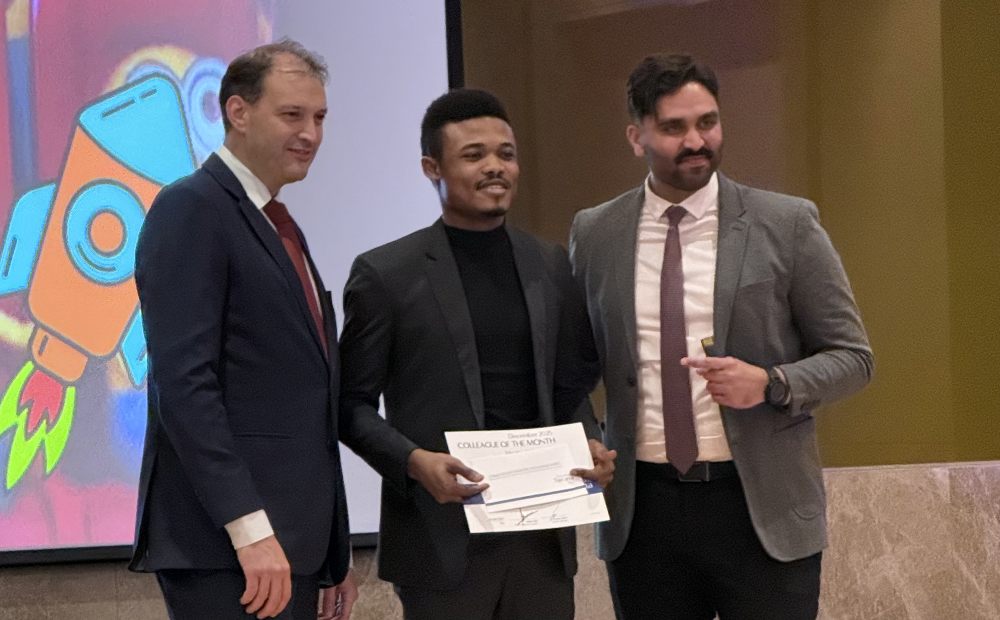
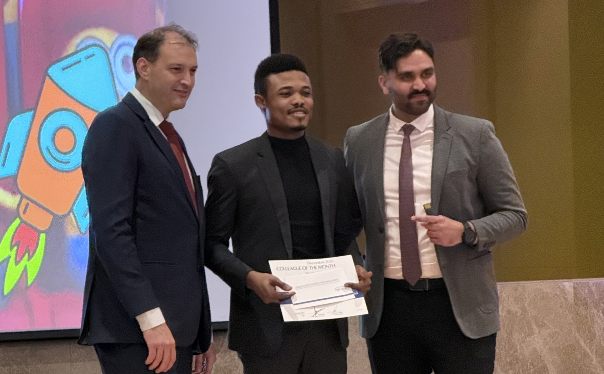
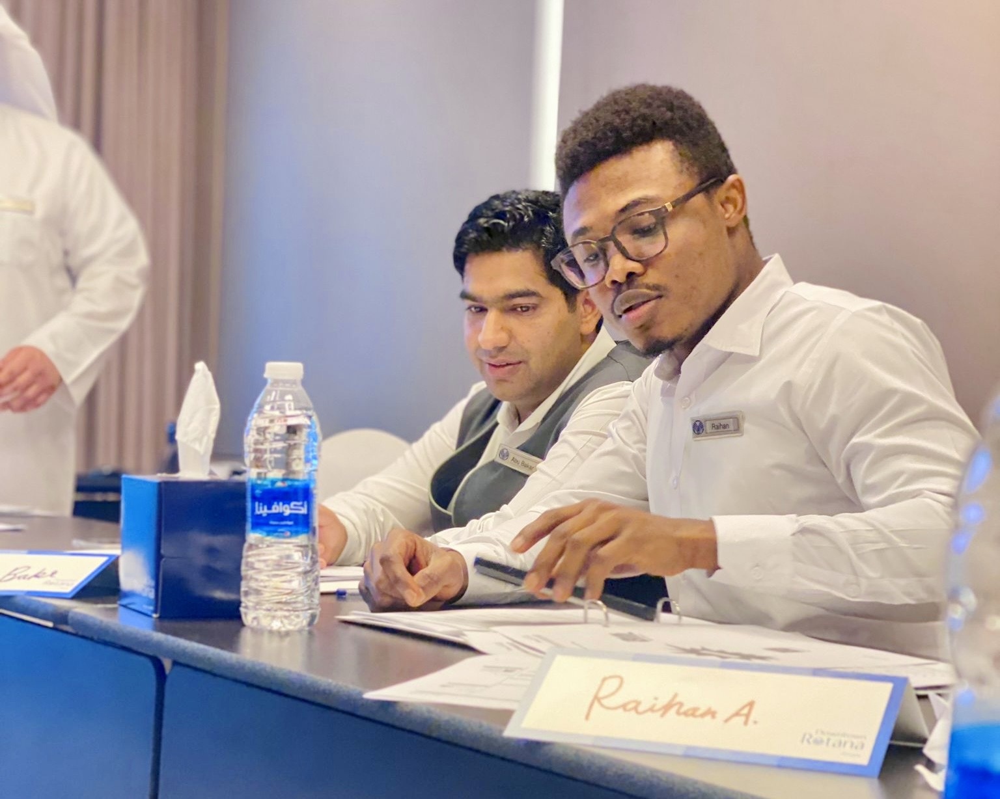
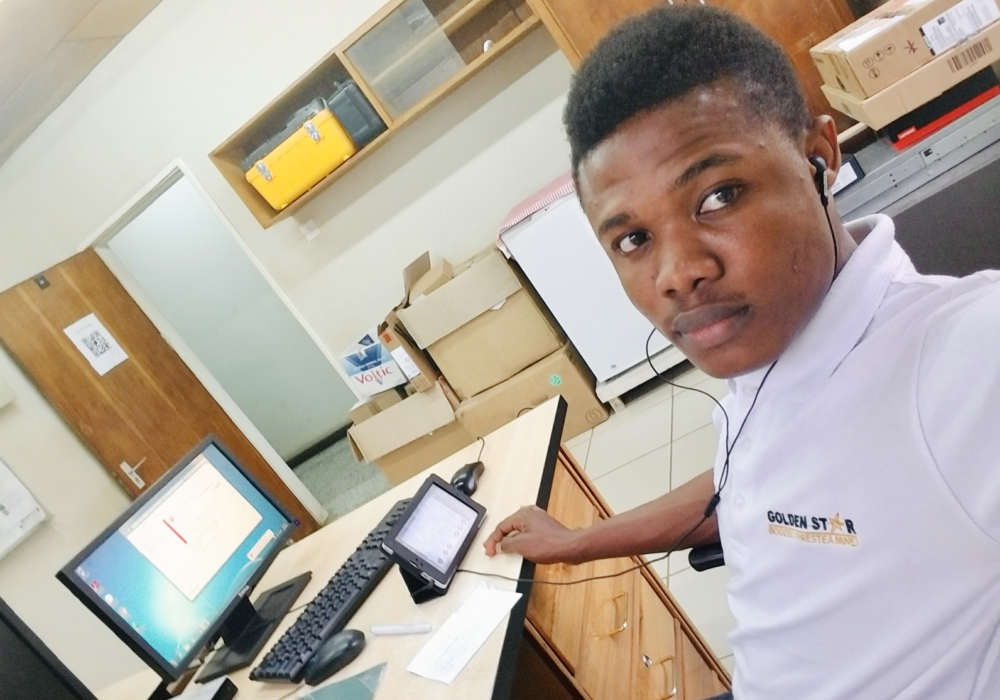
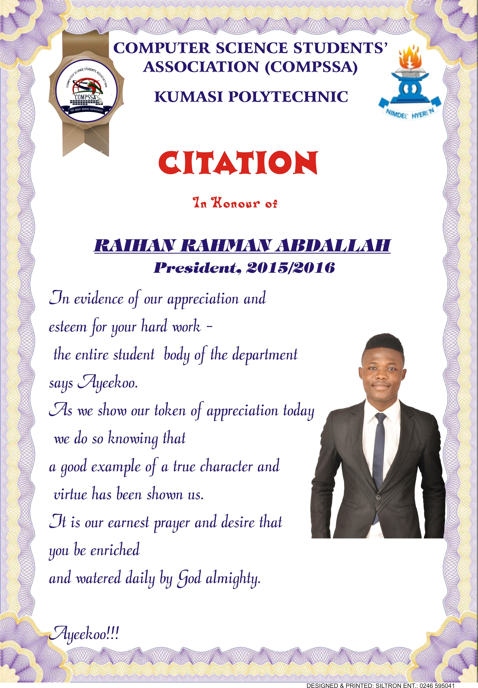

January 1, 2025
Whether I am leading a workshop, troubleshooting system errors,
or mentoring someone new to Tech, I love building bridges between people
and the digital world.
 

Grateful to have been recognized as Colleague of the Month for December 2025, during our New Year celebration in January 2026, and to have also received a LIFE Card in line with our ROTANA values.
These two recognitions mean a lot to me, as they reflect the support, collaboration, and ecouragement of an amazing team. I am thankful for the opportunity to work with such dedicated colleagues and learn from them every day. Looking forward to continuing to contribute, grow, and support our shared goals.

One of my favourite highlights of 2025, was this two-day session on Group Training Techniques. As the departmental trainer for the IT Department, I found the forum to be both eye-opening and energizing. The forum brought together all the trainers and facilitators in Downtown Rotana, lead by the Learning and Development Officer, to engage on how to effectively train learners in group settings.
Slayin' n Playin'
When the Marketing Team keep chasing you for a tiktok video, saying "no" would be treason!

Turns out when we are not behind our desks or staring at OPERA interfaces or punching POS machines or wrestling printers; we are actually good-looking bunch of ladies and gentlemen.
Staff parties have a funny way of reminding us of that every year. It is like someone hits the refresh button on our personalities — suddenly, the person who always says "noted" in emails is out there belting karaoke hits like they are in auditions. The usually quiet colleague is now leading the conga line. Even the boss cracks a smile that is not attached to a deadline.
This year, I decided to add a little magic to the mix — literally. I performed a few magic tricks during the party, however do not ask about the reactions. Between beheading a live human, levitating myself, and disappearing cards, it felt great to sprinkle a bit of wonder into the evening. For a brief moment, even the toughest skeptics believed in a little magic — or at least the power of a good sleight of hand!
Beyond the food & drinks, music & dancing, games & perfomances; these events also serve as occasions for awards and recognitions. I had honour of being nominated for the Colleague of the Year Award for the year under review. This recognition meant a great deal to me as it was the affirmation of the values I strive to uphold-teamwork, professionalism, and a service mindset.
Because at the end of the day, it is not just the systems we manage, the reports we file, or the guests we serve that define us — it is how we lift each other up, share a laugh, and remind ourselves (at least once a year) that we are not just colleagues — we are a team that cleans up pretty well when the laptops are closed and the dance floor is open.
There has been this common notion that IT professionals are glued to their desks, typing away in front of screens. It is a cool image, but a wrong one. In reality, careers in IT involve a healthy balance between desk work and field operations.
Looking back at my early years in this field, the legacy environments of Windows 7, and its server counterpart Windows Server 2008 R2 for instance, were even far more physical.
A common part of my day involved gearing up — grabbing my safety helmet, buckling up my steel-toe boots and heading straight into the heart of the mining plant to troubleshoot whichever one of our devices had decided to "take a nap" that day.
However that period was the perfect bridge between traditional infrastructure and the modern cloud-driven environment we know currently.
Today, we no longer need to even take physical backups and store them in labeled drives or tapes. The need to be physically present has reduced drastically — yet productivity and reliability have increased exponentially. This evolution reflects the true spirit of Information Technology: constant adaptation!

Starting my career at Golden Star Resources marked the beginning of my hands-on journey in the world of information technology. Working in a mining environment taught me the value of reliability, precision, and most importantly, safety — qualities that continue to guide my approach to solving IT challenges.
Although much has changed in the IT field since then, the core principles — ethical practices, systematic approaches, and sound processes — remain the same. Principles that ensure we place compliance above speed to avoid technical debts (quick fixes that cause bigger problems later).
As always, direction is better than speed. There is no need to go on the wrong path very fast.

On October 15, 2015, I was elected as President of the Computer Science Students' Association (COMPSSA) at Kumasi Polytechnic (now Kumasi Technical University). This role was not only a leadership journey but would also prove to be a defining moment in my academic and professional growth.